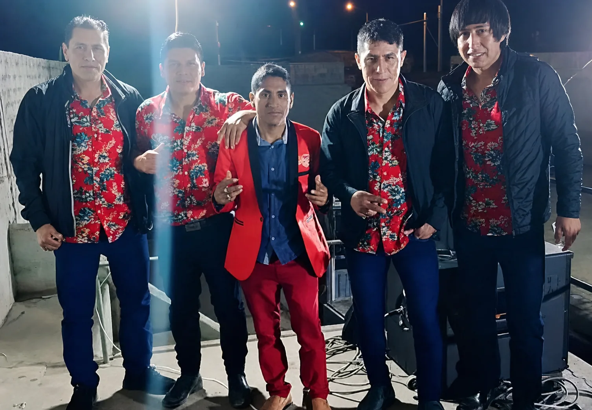

Agrupaciones y orquestas
Participación fija o por fechas en agrupaciones que requieren bajista eléctrico.
Bajista independiente · Huacho, Perú
Base, ritmo y presencia para tu agrupación o evento en Huacho, Huaura y otras ciudades. Disponible para presentaciones, ensayos, reemplazos y proyectos musicales.

Sobre mí
Soy Oscar Arce, bajista eléctrico independiente de Huacho. Trabajo con agrupaciones, músicos y organizadores que necesitan una base rítmica sólida, responsabilidad y buena coordinación.
Me adapto al repertorio y a las necesidades de cada presentación, ya sea para una fecha puntual, una temporada, un ensayo, una grabación o un reemplazo.
PreparaciónRevisión previa del repertorio y coordinación de ensayos.
AdaptaciónTrabajo con distintos formatos, músicos y estilos.
ResponsabilidadCompromiso con horarios, acuerdos y presentación.
Servicios musicales
Cuéntame qué necesitas, la fecha, el lugar y el repertorio. Te responderé para confirmar disponibilidad y coordinación.
Participación fija o por fechas en agrupaciones que requieren bajista eléctrico.
Presentaciones para fiestas, celebraciones, shows y eventos públicos o privados.
Apoyo para cubrir presentaciones o ensayos cuando el bajista titular no está disponible.
Preparación de repertorio, acompañamiento en ensayos y participación en grabaciones.
En vivo
Una muestra de una presentación en vivo. Para ver más contenido, fotografías y videos, visita el perfil de TikTok de Oscar.
Ver perfil en TikTokGalería
Imágenes reales de Oscar Arce y de su trabajo musical.
Contacto
Envía los datos principales del proyecto. El botón abrirá WhatsApp con el mensaje listo para enviar.
Oscar Arce · Bajista